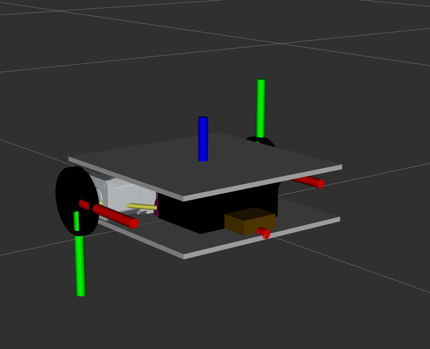

ROS 2 robot description
In this chapter we will describe the robot used in this experiment. It is a very simple differential drive robot with to wheels and a caster wheel, that I build from scraps. We will now build a simple xacro model for the robot. That in the end will look like this:
{kind=link}
First create folders for the meshes and the urdf in your configuration package.
cd ~/ros2_ws/src/my_robot_description
mkdir meshes
mkdir urdf
Now we need to copy over the meshes as we do not have time to model these in this class.
cp ~/ros2_ws/src/robby_description/meshes/* \
~/ros2_ws/src/my_robot_description/meshes/
The next step is to create a xacro macro for the robot. Need to create a xacro file for this
robby.robot.xacro.
<?xml version="1.0"?>
<robot xmlns:xacro="http://www.ros.org/wiki/xacro">
<xacro:macro name="robby" params="
name
prefix
parent
*origin
" >
</xacro:macro>
</robot>
This is an empty macro that we can pass parameters for name, a prefix, a parent and an origin to. Now let’s add the links and joints. In our case we have three links, the base link, wheel on the left and a wheel on the right. The wheels need to be able to turn, so they are connected as continuous joints with the base link. The base link is fixed to the parent with the transform origin that we pass in as parameter.
<?xml version="1.0"?>
<robot xmlns:xacro="http://www.ros.org/wiki/xacro">
<xacro:macro name="robby" params="
name
prefix
parent
*origin
" >
<link name="${prefix}base_link">
</link>
<link name="${prefix}left_wheel_link">
</link>
<link name="${prefix}right_wheel_link">
</link>
<joint name="${prefix}base_joint" type="fixed">
<xacro:insert_block name="origin" />
<parent link="${parent}"/>
<child link="${prefix}base_link"/>
</joint>
<joint name="${prefix}left_wheel_joint" type="continuous">
<parent link="${prefix}base_link"/>
<child link="${prefix}left_wheel_link"/>
</joint>
<joint name="${prefix}right_wheel_joint" type="continuous">
<parent link="${prefix}base_link"/>
<child link="${prefix}right_wheel_link"/>
</joint>
</xacro:macro>
</robot>
Now, that we have setup the tree of links and joints, we can add the visuals to the model. Due to the way I have modelled the components, we have to add a couple of transformations.
<?xml version="1.0"?>
<robot xmlns:xacro="http://www.ros.org/wiki/xacro">
<xacro:macro name="robby" params="
name
prefix
parent
*origin
" >
<link name="${prefix}base_link">
<visual>
<origin xyz="0 0 0" rpy="0 0 0"/>
<geometry>
<mesh filename="package://my_robot_description/meshes/base.dae" />
</geometry>
</visual>
</link>
<link name="${prefix}left_wheel_link">
<visual>
<origin xyz="0 0 0" rpy="0 0 0"/>
<geometry>
<mesh filename="package://my_robot_description/meshes/wheel.dae" />
</geometry>
</visual>
</link>
<link name="${prefix}right_wheel_link">
<visual>
<origin xyz="0 0 0" rpy="0 3.14 0"/>
<geometry>
<mesh filename="package://my_robot_description/meshes/wheel.dae" />
</geometry>
</visual>
</link>
<joint name="${prefix}base_joint" type="fixed">
<xacro:insert_block name="origin" />
<parent link="${parent}"/>
<child link="${prefix}base_link"/>
</joint>
<joint name="${prefix}left_wheel_joint" type="continuous">
<parent link="${prefix}base_link"/>
<child link="${prefix}left_wheel_link"/>
<origin xyz="-0.05 0.12 0.021" rpy="1.57 0 0"/>
<axis xyz="0 0 -1" />
</joint>
<joint name="${prefix}right_wheel_joint" type="continuous">
<parent link="${prefix}base_link"/>
<child link="${prefix}right_wheel_link"/>
<origin xyz="-0.05 -0.12 0.021" rpy="-1.57 0 0"/>
<axis xyz="0 0 1" />
</joint>
</xacro:macro>
</robot>
Now we have create a macro for our robot. We can now create our robot system description (as well using xacro). This will import the macro of our robot and locate it with respect to the world.
Therefore, create another file in the urdf folder of your package wwith the name robby.system.xacro.
touch robby.system.xacro
In that file we have to create a link that represents the world’s origin and we have to instantiate our macro for robby.
<?xml version="1.0"?>
<robot xmlns:xacro="http://wiki.ros.org/xacro" name="robby">
<xacro:include filename="$(find my_robot_description)/urdf/robby.robot.xacro"/>
<link name="world" />
<xacro:robby
name="robby"
prefix=""
parent="world"
>
<origin xyz="0 0 0.014" rpy="0 0 -1.57" />
</xacro:robby>
</robot>
Finally we have to tell cmake about the files that we have created and that they
should be installed. Therefore, add the following line after the find_package()
routines.
install(DIRECTORY
meshes urdf
DESTINATION share/${PROJECT_NAME}
)
We can now build the package.
cd ~/ros2_ws/
colcon build --packages-select my_robot_description
Now we can source the workspace and we are able to use the files we have created.
Tip
You can now visualize the robot in rviz. To make this simple, clone the the urdf_launch package into your workspace (https://github.com/ros/urdf_launch.git) and build. Then you can run the following command to visualize the robot.
ros2 launch urdf_launch display.launch.py \ urdf_package:=my_robot_description \ urdf_package_path:=urdf/robby.system.xacro
This is it, you now have a very simple model for robby and we can now continue with describing the CANopen bus for controlling robby.